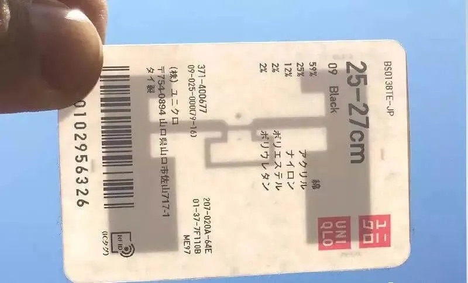
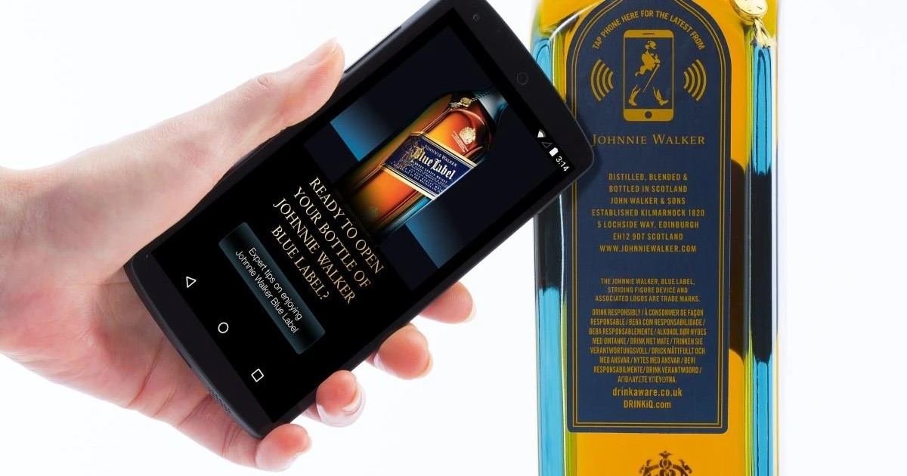

While talking labels are primarily used in the healthcare and pharmaceutical industries to help visually impaired individuals access medication, they are not commonly used in other sectors such as retail, food packaging and cosmetics. However, the adoption of smart labelling using NFC tags is increasing as many industries are finding innovative ways to implement it into their products.
Retail Industry
NFC technology has transformed the retail industry by enhancing the consumer experience through providing product information, including material details, size guides and styling tips (Seven.h, 2025). It also provides authentication by eliminating counterfeit items, particularly for luxury fashion brands, allowing companies to manage their inventory more efficiently.
In 2017, Uniqlo was one of the first clothing brands to adopt RFID technology and found success by using it to manage inventory, improve consumers’ checkout experience and gather customer analytics to enhance its products (VA-Bai, 2023). With an RFID tag placed in each article of clothing, RFID readers throughout the store can accurately keep track of available inventory at all times. The technology also provides customers an efficient self-checkout experience. Customers are able to place their items into the self-checkout bin and have the RFID reader automatically detect and display each item for checkout. This eliminates traditional barcode scanning, making the process more efficient and convenient for customers. Additionally, consumer data collected from RFID readings across the store also helps brands analyze consumer shopping trends, such as what items are selling the most and which items are being taken into the fitting room. The data can then be used to help create a more personalized experience by identifying customers through their account and offering recommendations from their shopping habits.

The implementation of RFID tags for inventory management purposes is also growing across the retail industry. The technology creates a faster and more efficient way of identifying and tracking inventory count, resulting in lower manual labour cost while improving the accuracy of automated tracking (Andrew, 2025).
Food Packaging
Similar to the retail industry, NFC and RFID technology has improved inventory monitoring within the food industry, allowing companies to effectively conduct quality control checks for better food distribution and handling. Temperature monitoring on perishable food products and tagged information on production data and expiration dates help companies easily identify and track items efficiently, ensuring the quality of all food products before they reach consumers (Food and beverage, 2024).
NFC tags on consumer food packaging also engage consumers with the brand by including product information and an added level of tamper evidence. For example, beverage company Diageo enhanced the consumer experience by introducing NFC tags onto the whisky’s labelling for Johnnie Walker Blue. Consumers are able to tap their phones and interact with the bottle, providing brand information and stories about the product. While this elevates the consumer experience, the technology also provides tamper evidence as the tag cannot be used once the packaging seal is broken (Zheng, 2020). Another example is Nestlé using NFC tags on baby formula packaging, allowing parents access to product information such as the ingredient list, nutritional value and expiration date while also providing feeding reminders and notifications for when it’s time to repurchase the product (Case studies, 2024).

Cosmetics Industry
With the rise of fake beauty products being sold through different distributors and online shops attempting to counterfeit, the cosmetics industry has focused its use of NFC technology as an added layer of security and authentication, allowing companies and consumers to easily identify legitimate products from fake ones (Heshiwei, 2025). This added protection on cosmetic products preserves the brand image and ensures that customers receive authentic products.
Cosmetic brands are also finding innovative ways to enhance the user experience. For example, Estée Lauder has used NFC technology that directs to a customized website containing interactive information about its product and brand, including personalized skincare routines and loyalty rewards. The accessible website from the NFC tag eliminates the need for customers to download third-party applications. The convenience and accessibility of the technology successfully resulted in a 15.4% increase in repurchase rates for Estée Lauder (Skadi, 2025).
Future Implementation of Talking Labels
With the rise of NFC technology across various sectors beyond healthcare, the implementation of talking labels into existing smart labelling systems presents an opportunity to improve accessibility. Companies already investing in tags use them to keep track of inventory, run quality control on products, provide authentication and expand the user experience. While most consumers benefit from the additional product information available, visually impaired individuals may still face barriers accessing the information independently. By integrating talking labels into existing NFC-tagged products, companies can make product information more accessible to visually impaired consumers. This would allow them to navigate the store, find products and access product details independently, creating a more inclusive experience across all industries.
References
- Andrew. (2025, October 16). Invisible security RFID for jewellery: How tiny RFID tags are hidden for ultimate protection? RFIDTag.
- Case studies: Successful examples of connected packaging in action. (2024, April 2). Appetite Creative.
- Food and beverage industry using NFC RFID. (2024, November 13). GAO RFID.
- Heshiwei. (2025, January 3). Application of NFC technology in cosmetics of internationally famous brands. Excellent NFC Products Supplier.
- Seven.h. (2025, August 11). How NFC clothing tags drive apparel brand growth in 2026. RFIDTag.
- Skadi. (2025, October 22). NFC case studies: 10 brilliant examples driving ROI & retail sales. RFIDTag.
- VA-Bai. (2023, July 18). Inside UNIQLO global stores RFID tags success story. MoreRFID.
- Zheng. (2020, August 27). Connected smart bottles: Diageo uses NFC technology for Johnnie Walker Blue whiskey. RFID Label.